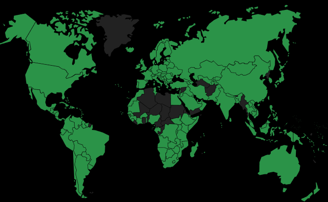

By Murilo Krominski

-orange.svg)


Hello World!
WORK AND PARTNERSHIPS
Have a groundbreaking idea, an innovative project, or a start-up to soar?
Your idea will be the next global success! Together, let’s make it happen!
I'm ready to tackle complex challenges, develop winning strategies, and help create high-impact businesses with global reach.
High-performance executive consulting, tailored for leaders and teams worldwide.
Combining a creative and analytical mind with extensive experience in disruptive technologies and a deep understanding of global data and trends, I am equipped to anticipate global changes and create innovative solutions.
From "Assembly" language to "Machine Learning", I speak the language of machines and combine it with business acumen to drive strategic transformations in the executive landscape. Wherever I work, I drive innovation and continuous improvement.
My expertise spans business, technology, people, and processes. With over 500 certifications and cross-departmental experience, I bring an integrated perspective to implementing high-level strategies.
If you’re ready to change the game, I’m here to guide you on this transformative journey.
Let’s shape your organization’s future together!
AREAS OF GREATEST EXPERTISE:
- 👨🏻💼 Business Manager & Corporate Consultant
- 🤖 Robotics Engineer | IoT & RPA (Robotic Process Automation)
- 🧠 AI and ML Solution Specialist
- 📊 Data Scientist
- 💡 Innovation Strategist and Smart Manufacturing
- 📈 Data-Driven Business Executive
- 🚀 Startup Mentor
- 🔍 Expert, Consultant, and Quality Auditor | ISO/TS Systems
EDUCATION AND CERTIFICATIONS:
- 👨🏻💼 Specialization in Business Administration – Fundação Getúlio Vargas (FGV).
TOP 1 Latin America | TOP 9 Think Tank Worldwide | TOP 100 Global Management | FGV EBAPE-BR (EQUIS EFMD & AACSB), EPGE-BR.
- 🤖 Degree in Robotics Engineering
CREA-BR, CONFEA-BR, OE-PT/EU (as required), FEANI-EU (as required).
- ⚙️ Technical Training in Industrial Mechatronics.
MEC-BR.
- 🔍 Technical Training in Quality.
SGS ICS/CH/WW-BR, IQA-BR.
- 📚 Over 500 Certifications in areas such as technology, management, innovation, human behavior, and other technical specialties.
I never stop studying and improving.
- 🏅 International Certifications through participation in events, challenges, and dozens of courses by major tech companies, focusing on development and innovation, mainly in Italy and Portugal.
- 🧑💻 On-site Participation in Tech Events, Business Hackathons, Meetups, and International Dev Marathons.
- 🌍 Academic and Professional International Intensive – Practical and immersive experience in renowned tech hubs across Europe, with an emphasis on knowledge exchange and collaboration with some of the world’s top specialists.
INTERNATIONAL MOBILITY AND PAYMENTS:

 Brazilian and Italian Citizen, holding both passports.
Brazilian and Italian Citizen, holding both passports.- 🛂 178 Personal Mobility Points (3rd best in the world in 2024 with access to 89% of countries worldwide quickly and directly).
- 📍 Currently living in Santo André, São Paulo, Brazil.
- 🗺 I have the flexibility, experience, and adaptability to work globally.
- 🌐 I am open to both short-term partnerships and long-term collaborations, whether in-person, remote, hybrid, with or without the need for national/international travel or relocation.

💳 I am comfortable with handling payments and international transactions, compliant with global regulations:
- Brazil: TED, DOC, or PIX.
 Germany, Italy, and
Germany, Italy, and  Portugal: IBAN and SWIFT/BIC.
Portugal: IBAN and SWIFT/BIC. United States: Routing Number.
United States: Routing Number.- 🌏 World: Bitcoin.
LANGUAGES AND SOFT SKILLS:
- Portuguese: Fluent (C2).
- Italian: Proficient (C1).
- English: Advanced (B2, progressing to C1).
- Spanish: Intermediate (B1).
International Phonetic Alphabet: I developed a system using the IPA for correct phonetic transcription and pronunciation in any language.
Digital Skills: Using pre-prepared technological tools, I can quickly understand any information and communicate in any language.
💬Multicultural Communication:
I have handled international issues in engineering, quality, assurance, logistics, and purchasing, primarily within the automotive and telecommunications sectors, working in multinational companies and tackling major challenges in languages such as English, Spanish, Chinese, French, and Italian.
Even before the rise of artificial intelligence, which has nearly erased difficulties in global communication, I was already achieving seamless international interactions, even in complex scenarios where I encountered languages I did not know.
Though I don’t speak French, I developed a "Standard Guarantee System" (SPPC) in French, which became the standard across the parent company in France and later in all Valeo units worldwide.
My expertise in machine learning and OCR (Optical Character Recognition) also enables me to accurately read and translate handwritten texts. I apply state-of-the-art technology to archaeological and historical texts, breaking down language barriers—even in extinct languages.
In short, I can communicate effectively across the globe with the support of technology, and if required, I am prepared to learn or master a new language quickly and efficiently.
🧬 BEHAVIORAL PROFILE (MBTI):
- I'm classified as an INTJ by the MBTI, a profile known for analytical thinking, strategic planning, independence, and a strong focus on achieving results.
- I have High Abilities and Giftedness (HAG), especially in logical reasoning, creativity, and rapid learning, along with a natural ability to solve complex problems and adapt knowledge to tackle new challenges.
- I'm an avid reader, with a daily habit of exploring different cultures and discovering new ideas through reading.
🏅 SOME CERTIFICATIONS AND LICENSES:
- Audit/Consulting/Quality Management:
5W2H; Advanced Statistics; APQP (Advanced Product Quality Planning); Certified International Property Specialist (CIPS); FMEA (Failure Mode and Effects Analysis); FTA; ISO 9001; ISO/TS 16949; Kaizen; LLC; MSA (Measurement System Analysis); QRQC-PDCA-FTA (Valeo’s Quick Response Quality Control)...
- Automation/Control/Engineering/Data Intelligence/Machine Languages:
Arduino; Artificial Intelligence; Assembly (MPLAB Microchips PIC); BigData; Bioinformatics; C++; Cloud; CS50 (Harvard); Data Science; Database Management Systems - MySQL; Delphi; IoT; Ladder (PLC); Machine Learning; Macros/VBA + Excel; Matlab; Modern Deep Learning/Convolutional Neural Networks; Petri Nets; Power BI; Projects with IBM Cloud; Python; User/SysRPL...
- Business Management/Legal/Logistics/Marketing/Human Resources/Sales:
Administrative Modernization in HR; Digital Marketing by Google Italy (IAB Europe accredited); Dropshipping; Economics; Financial Analyst Training, Investing and Master of Business Administration Course with Chris Haroun; Financial Mathematical Modeling; Google Power Searching; HP 50G/12C Calculators; Patents and Legal Bases; Professional Sales; Project/Administrative and Production Process Management by Valeo; Sales Management...